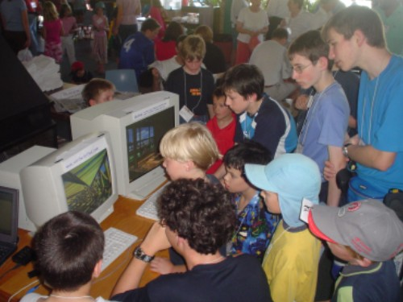
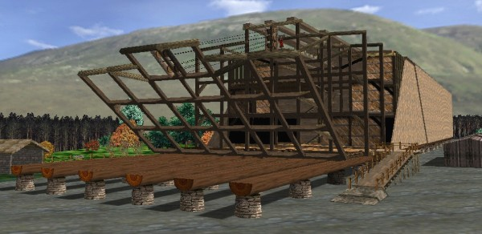
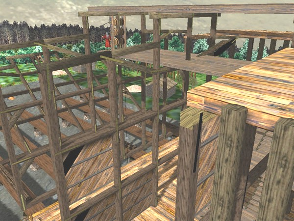
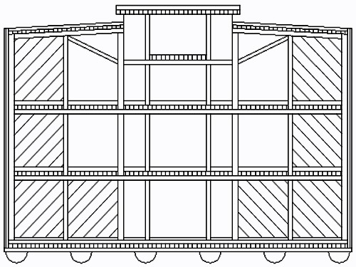
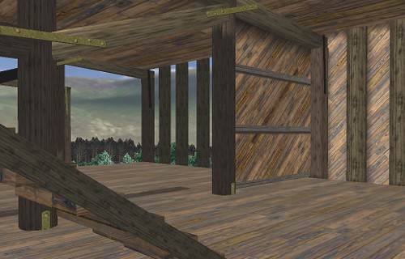
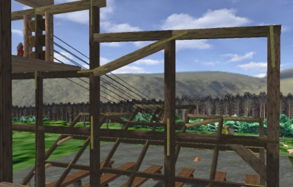
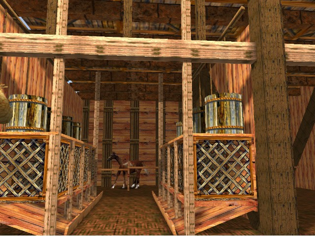
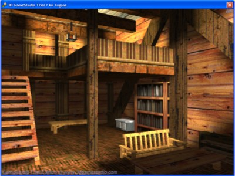

Defining Diluvia Home Menu Copyright Tim Lovett Jan 2004
.
.
.

Sample Diluvia scenes under trial at the AiG Supercamp in Sydney - Jan 2004.
DEFINING DILUVIA: CREATING THE 3D INTERACTIVE WORLD OF NOAH'S ARK
Realtime 3D (commonly known as a computer game) is an ideal media for Noah's ark. A single picture can hardly do justice to the structure and scale of the ark, particularly the interior. Using 3D game technology (DirectX) you will be navigating through the corridors and decks, visiting rooms and cages, inspecting water systems and even taking part in the construction.
Ever heard Christian parents lamenting the lack of decent games?
While the Christian computer game market has been lagging considerably, the last few years have seen quality titles reaching the shelves. More are in the pipeline. Modern game engines and resources have advanced to the point where million dollar budgets are not compulsory. (Unless you are developing a cutting edge title or rushing out a game following a movie, or you have millions of dollars.) WorldWideFlood has links with Christian game developers in the US, and a growing list of contributors. Computer games do not need to be as mind-dulling as the idiot box (TV), in fact, there is an increasing use of 3D game technology in educational media today. Diluvia is using the same game engine as the Australian EurekaMultimedia series (EduEnglish etc).
WWF has been investigating Noah's Ark for several years. The majority of resources are derived from the 3 main players in creationist research and publishing;
Answers in Genesis (AiG)
Institute for Creation Research (ICR)
Creation Research Society (CRS)
The most significant resources have been John Woodmorappe's "Noah's Ark - A Feasibility Study" (ICR), the Korean research paper "Safety Investigation of Noah's Ark in a Seaway". (AiG), and the advice of AiG scientists and staff in Australia. AiG has also helped in networking with ark modelling specialists (like Rod Walsh), and initiated the contact with US naval architect Jim King.
Concentrating on the structure and design of the ark, WWF has a primary goal of defining a possible ark that would be capable of navigating seas at least as severe as a modern ocean. This involves hull design (Naval Architecture), awareness of ancient shipbuilding techniques (Greek triremes etc), feeding and load capacity calculations (based on Woodmorappe), lots of trial and error modelling arrangements and the valued feedback of viewers and advisers.
DILUVIA RELEASE 1: THE ARK UNDER CONSTRUCTION
The initial release of Diluvia will be focussed on the ark under construction. This makes it very clear how we envisage the ark might have been built, and postpones the critical catastrophe scenes and large number of animals to a later release. The player will have full walkthrough access, take part in construction, experiment with hull design and loading arrangements, and be involved in various construction scenarios.
Now, as soon as you see a picture, you might have questions... Answers may appear speculative at times, but hopefully we have chosen a likely contender for what Noah may have chosen to do.

Screenshot from Diluvia as shown at AiG Supercamp Jan 2004.
All miraculous intervention. One extreme is to claim the entire account of Noah's Ark is "miraculous". This is an unusual position in relation to the rest of the Bible, since God nearly always 'minimises' the miraculous, by getting us to do what we can. So what could Noah do? Quite a bit (see below). A further difficulty with this position is that several specific interventions are indicated; God gave the ark specifications, God brought animals, God shut the door, and God remembered Noah during the flood. If God was also suspending the ark in mid-air, or putting all the animals into a trance, why not mention these too?- (Certainly much bigger issues then shutting a door.)
What could Noah do? The world had virtually unlimited resources (particularly timber and food), and bronze and steel technology had been around for centuries. So Noah should have been extremely wealthy (by our standards). However, ultra-high levels of technology are not indicated since God suggested wood construction (metal is better), and today's technology might have produced some survivors. (The flood had to sink ships too). We are suggesting a level of technology roughly parallel with ancient Egyptians, Greeks, and Romans. i.e. Very ingenious, capable of crafting metals, ceramics, but without the industrialised manufacturing made possible with electricity and heat engines (steam, combustion engines etc) - which implies high precision machine tools. However, the Egyptians could drill and cut granite, the Greeks could build ships 128m long and the Romans 'invented' concrete (maybe). Certainly a long way above Noah chipping away with an adze (with his family watching). Wood processing technology could include animal or water driven saws, and various specialized tools for jointing and detailing. Reciprocating saws would be more likely than the circular saw due to the lower power requirement and more obvious development from the hand saw. All forms of heat engine are excluded.
Why is it on stone piers? It is standard practice when building a ship that access is provided to the underside. With a possible construction period of 100 or 120 years, and a warmer, wetter climate, we decided the hull should be elevated on rot-resistant piers. Also, the extreme size of the first timbers (50 tonnes) would make lifting a problem. In this arrangement, the timbers could be incrementally lifted and piers built underneath. Access to the underside of the hull is also important for waterproofing and for attaching fixings to structural members. (Such as bronze straps fixed to the bulkhead frame being raised in the screenshot above).
Site location? This is a good question. It is logical to expect the flood arrived rather quickly, otherwise it should have been attacked by the desperate pre-flood inhabitants. While catastrophic tectonics is the favoured flood mechanism (in line with AiG), a high rate of inundation could produce extremely high speed sheet flow (up to 100km/h). Not a good way to launch a vessel - dragged inland by a torrent of water. One workaround is to select (or be guided to) a site where high currents would be avoided - perhaps a short sea-border in front of a continental mountain range, or possibly a peninsula where inundation becomes almost non-directional. A low altitude site also has the advantage of floating timber to the ark, and using ship transport for collecting supplies. Alternatively, a high altitude site (a local maximum of say several thousand metres), would mean the ark would float late in the inundation, when currents had settled somewhat and no other land is a shipwrecking risk. Of course, this means people were not there at the time (with access to tools, ladders etc), and had somehow been prevented from reaching the high ground as the sea level rose. It also means Noah had extra work to bring materials up-hill. Certainly, such a site would appear far more foolish to the locals than a coastal location. Perhaps a heavily wooded plateau... WWF is still investigating this issue.
Climate? Wetter and warmer, as evidenced by lush plant growth in the fossil record. Canopy models cannot account for more than a few inches of water held in the atmosphere (40 days of rain had to be a cloud generating system - probably related to vulcanism), so no need for a dark English sky. Nor can hyperbaric conditions account for longevity. (The canopy model is mostly superceded today). As for no rainbows before the flood...the Bible doesn't say that. It says God used the rainbow as a reminder of a covenant. (Was there no bread before the Passover?). Anyway, can you imagine a perfect world without a clear blue sky at least sometimes?
Terrain? One of the most significant differences is that mountains were not as high. Himalayan proportions are definitely excluded since all mountains were covered. With enough water to reach a worldwide depth of 3 km, this appears to be a reasonable limit for pre-flood terrain. (plus or minus some tectonic adjustments). No lack of sediments. Sediments are necessary for plants, so the flood did not produce all sediments, but rather re-laid them. Possibly less rugged landscape also, with vegetation carpeting virtually all landmass.
Which cubit? Another big question. Current investigations have shown that the longer cubits are at least as likely as the shorter ones, if not more so. Since we are after maximum likelihood, and don't care about arguing the space issue, there is a good chance the longer cubit might be selected. Furthermore, the longer cubit makes more demands on the structure, so it would be good to have this option covered. Interestingly, the longer cubit makes a mezzanine floor feasible on any deck, which helps to access feeding systems and tiered cages, as well as reduce interior space pressure. The ark is likely to run out of space before reaching a weight limit - so it is regarded as a volume limited ship. With the longer cubit, the ark would still have plenty of room to move about and a very wide margin on maximum weight. This affords the possibility of substantial ballast (rocks, sand, concrete, etc) being used in the keel, allowing full control of the centre of gravity location for optimum sea-keeping and safety.

Screenshot from Diluvia as shown at AiG Supercamp Jan 2004.
Structure: Longitudinal hull strength is a dominant issue. This is achieved using substantial use of longitudinal timbers in the lowest deck and in the roof. (Maximum section modulus). In the Diluvia presentation at the AiG Supercamp Jan 2004, the sidewalls were shown as crossed layers of diagonal timbers - rather like bracing plywood. Shear resisting walls are necessary to eliminate substantial hull-flex - and associated leakage. The ancient Greeks used a complicated method of horizontal planks keyed together by thousands of mortise and tenon joints along their length. The 45 degree planking would be more effective (stiffer, and capable of higher shear stress) and require less labour. (Though more potentially more difficult scaffolding/fixing). The bulkhead frames are designed to be assembled on the deck platform, then raised into position. Joints are reinforced with bronze straps as seen in the screenshot above. Most bracing is achieved using cross-lamination - including the lateral bracing of bulkhead framework. These also act as wall dividers. Substantial vertical "ribs" are seen in the lower right of the picture, onto which the hull walls are attached. These are single lengths from bilge to roof (14 m). Bulkheads are spaced at the optimum span for deck support beams (longitudinal), forming room divisions in the lower levels, with the deck planking of the 2nd and 3rd decks running laterally (across the ark.) A mezzanine level appears possible in the skylight area and would form a comfortable dwelling area, as well as potential service zone for gravity fed water systems. Secondary strength considerations such as longitudinal axis torsion and lateral bending are comfortably accommodated if the major strength requirements are achieved using an integrated tubular (monocoque) hull. The roof is then a significant structural element, which also happens to make it rather impervious to volcanic debris ejected some distance away. (No doubt different to most other ships of the day). While this definition of ark structure is naturally speculative, large waves do not give you much choice structurally - especially if the longer cubit was used.

Concept sketch for hull cross-section. The skylight mezzanine ties the roof together. Note the need for less bulkhead bracing on the upper levels. Substantial longitudinal timbers are included in lowest deck and roof, with bending induced shear stresses resisted by layers of diagonal cross-ply planking on hull walls.

Construction on the third level showing bracing partition in a bulkhead frame.

Manila rope and wooden pulleys utilize animal power to raise a bulkhead frame. The 40mm (1.5") manila rope has a working load of 4000kg (8800lbs) and breaks at 5 times this load. Here, nine plys are engaged to a new 25 tonne/ton frame lifted by a bullock team on the ground. Rope stored in Egyptian pyramids was virtually identical to modern 3 multi-strand manila rope. Lubricated with fat on a bronze axle, wood makes a good pulley - they were still in use in machine shops after World War 2.

Cages being assembled and tested during the ark construction. These cages are for mid-sized active animals like monkeys, rabbit families or some birds. The slatted floor keeps the animal clean and droppings fall to the sloping tray to be collected in the gutter. Most small animals could drink from a water dispenser fed by a water skin above the cages, and grain feed dispensed from the wooden drums. Flushing of dung would be mostly unnecessary, and animals with low excreta rates (birds, reptiles etc) could have their dung left unattended for the entire year-long captivity. Most of the systems resemble intensive farming ideas, built only with timber, ceramics, leather and the occasional bit of metal.

Bedroom cabin concept: Exploiting the high ceiling with mezzanine sleeping quarters. Screenshot from the first Diluvia free download Dec 2003.